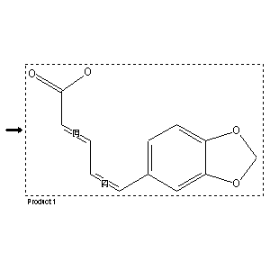

|  |
| FA | RX(1); FLST(1); RX(1) |
Reaction (1 of 1)
| Reaction ID | 5709599 |
| Product BRN | 85622 |
| Product | trans,cis-piperinic acid |
| No. of Reaction Details | 1 |
Reaction Details (1 of 1)
| Reaction Classification | Preparation (half reaction) |
| Citation Pointer | 3140982; Journal; Grewe et al.; CHBEAM; Chem.Ber.; 103; 1970; 3752,3766;3616539; Journal; Dallacker; Schubert; CHBEAM; Chem.Ber.; 108; 1975; 95,101,103; |
Reference (1 of 2)
| Citation Number | 3140982 |
| Document Type | Journal |
| Authors | Grewe et al. |
| CODEN | CHBEAM |
| Journal Title | Chem.Ber. |
| (Series) Volume | 103 |
| Publication Year | 1970 |
| Page | 3752,3766 |
Reference (2 of 2)
| Citation Number | 3616539 |
| Document Type | Journal |
| Authors | Dallacker; Schubert |
| CODEN | CHBEAM |
| Journal Title | Chem.Ber. |
| (Series) Volume | 108 |
| Publication Year | 1975 |
| Page | 95,101,103 |